Treino A
Obs.: Aquecer 15 minutos na esteira velocidade 5
| Exercício | Nº Equipamento | Séries | Repetições | Demonstração |
|---|---|---|---|---|
| Remada Aberta | 21 | 3 | 20 | 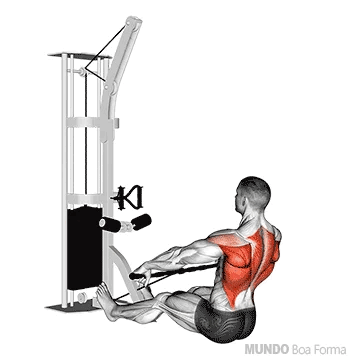 |
| Puxada Neutra com Triângulo | 22 | 3 | 20 | 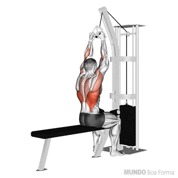 |
| Supino 45º com Halteres | - | 3 | 20 | 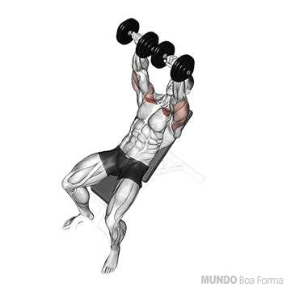 |
| Crucifixo Reto no Banco | - | 3 | 20 | 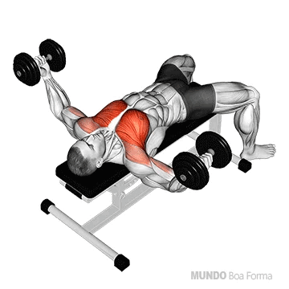 |
| Remada Alta no Pulley | - | 3 | 20 | 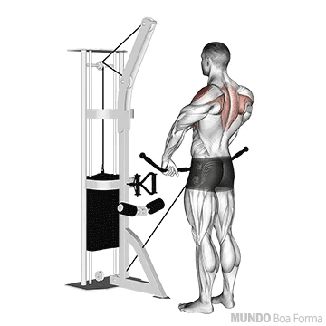 |
| Rosca Martelo Unilateral | - | 3 | 20 | 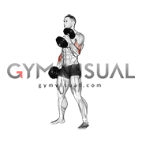 |
| Tríceps Francês com Halter | - | 3 | 20 | 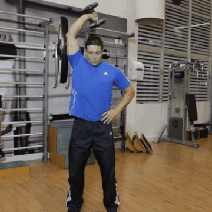 |
| Abdominal Supra + Infra | - | 3 | 12 + 12 | 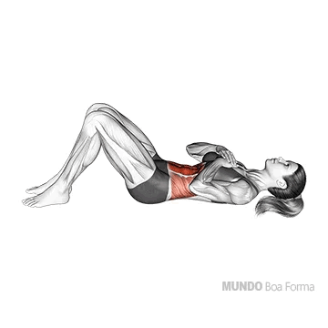 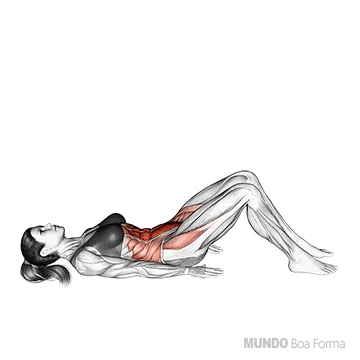 |
Obs.: Fazer 21 minutos na esteira alternando entre velocidade 5 e 7 a cada 3 minutos
Treino B
Obs.: Aquecer 15 minutos na esteira velocidade 5
| Exercício | Nº Equipamento | Séries | Repetições | Demonstração |
|---|---|---|---|---|
| Leg Press 45º | - | 3 | 20 | 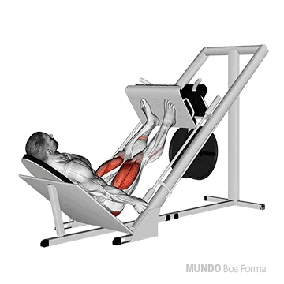 |
| Cadeira Extensora 2 Tempos | 8 | 3 | 20 |  |
| Cadeira Adutora | 4 | 3 | 20 | 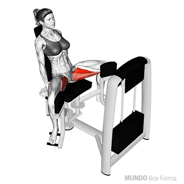 |
| Cadeira Abdutora | - | 3 | 20 | 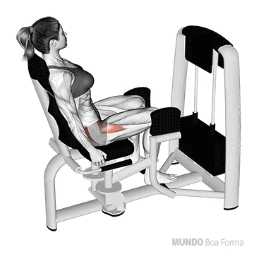 |
| Máquina Glúteo | - | 3 | 20 cada perna por série | 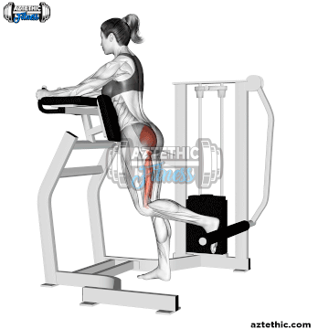 |
| Flexão de Joelho | - | 3 | 20 | 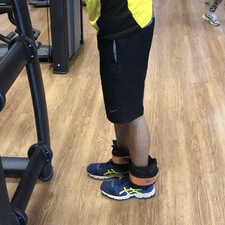 |
| Panturrilha Smith | - | 3 | 24 | 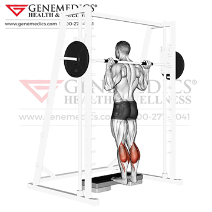 |